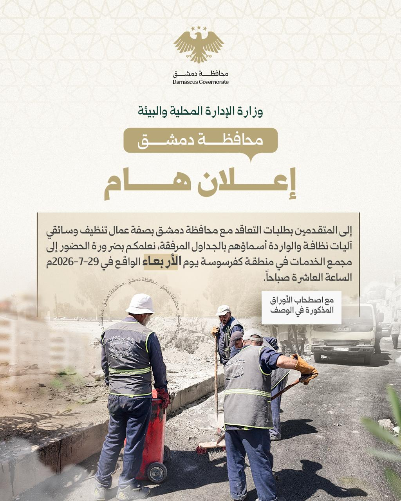
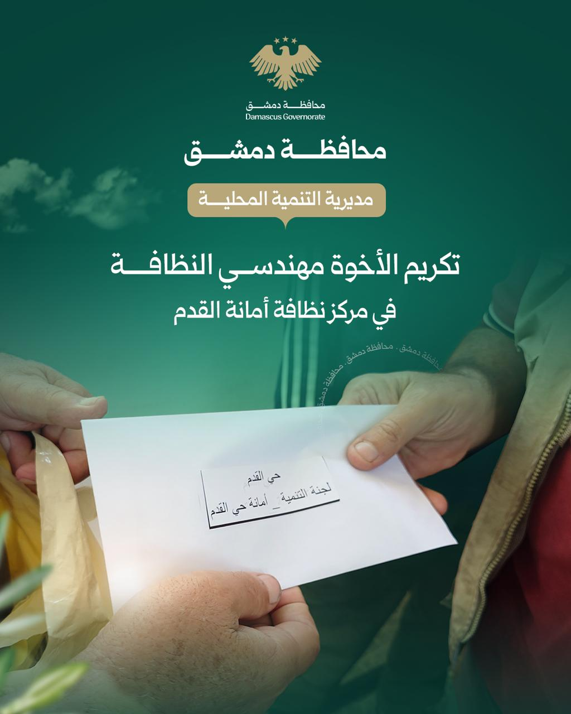
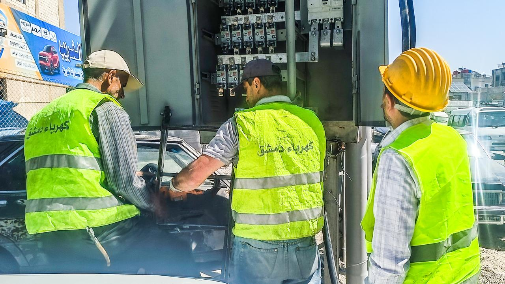
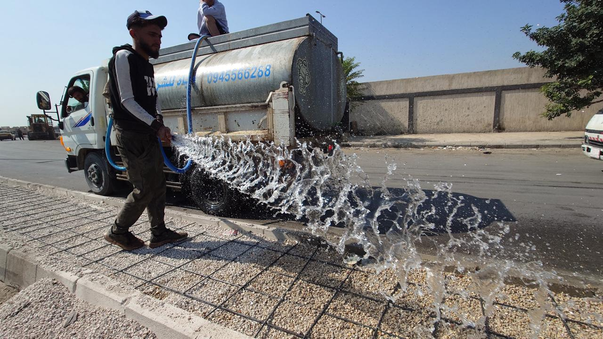
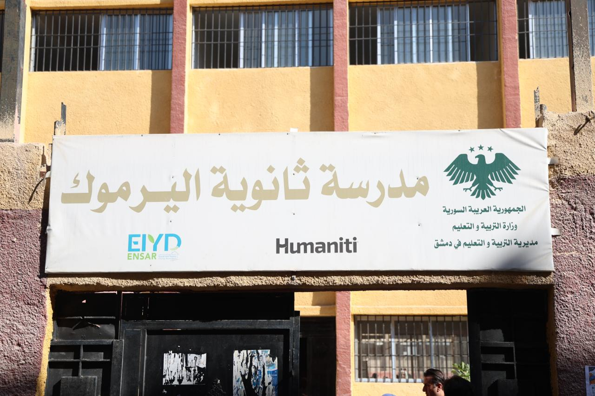

أخبار المحافظة

قرارات محافظة دمشق
مجموعة من القرارات والإجراءات التي اتخذتها محافظة دمشق ضمن خطتها لتطوير المجتمع.
1-9-2025
مديرية التنمية المحلية
مديرية التنمية المحلية في محافظة دمشق تكرم الأخوة مهندسي النظافة في مركز نظافة أمانة القدم.
6-9-2025
كهرباء دمشق
تفاصيل وتطورات عن الكهرباء في حي القدم.
8-9-2025
أعمال مديرية الإشراف في محافظة دمشق
مديرية الإشراف بمحافظة دمشق تواصل إشرافها على الأعمال والمشاريع الخدمية.
10-9-2025أعمال مديرية الصيانة في محافظة دمشق
قامت مديرية الصيانة بمحافظة دمشق بالتجهيز لأعمال تعبيد الطريق وتركيب المطريات.
11-9-2025
ثانوية اليرموك
افتتح معاون وزير التربية والتعليم للشؤون التربوية السيد يوسف عنان برفقة معاون محافظ دمشق السيد ضياء الدين محمد ثانوية اليرموك في دمشق، بعد الانتهاء من إعادة تأهيلها.
12-9-2025